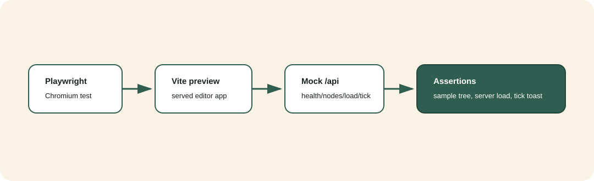
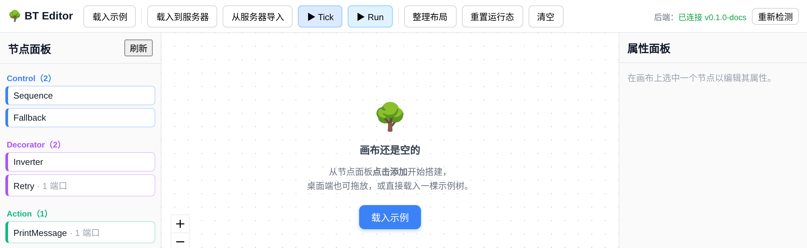
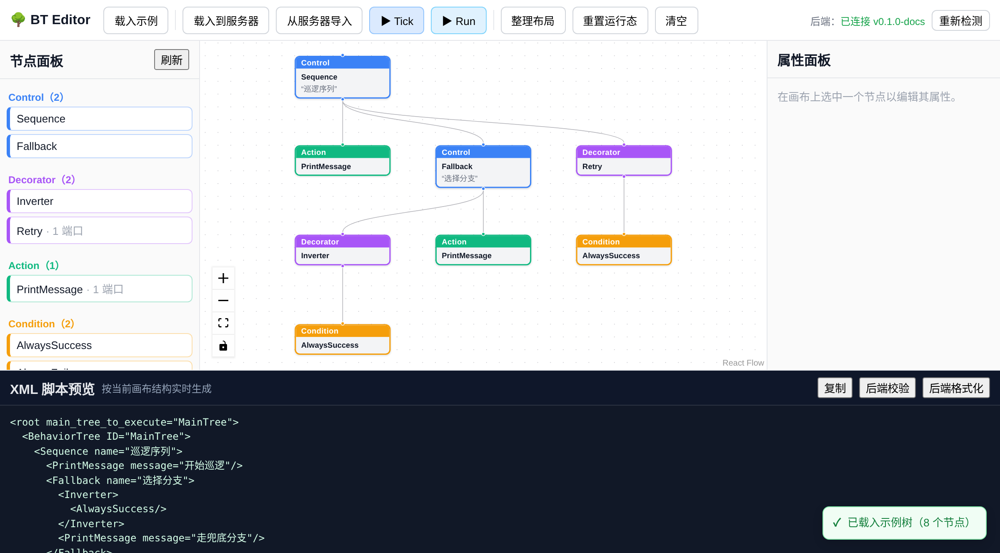
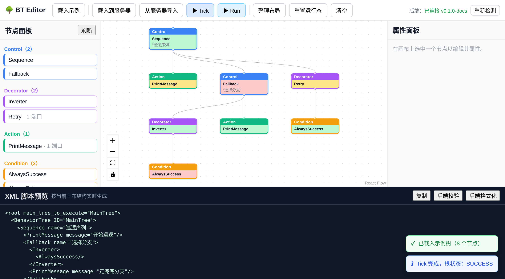
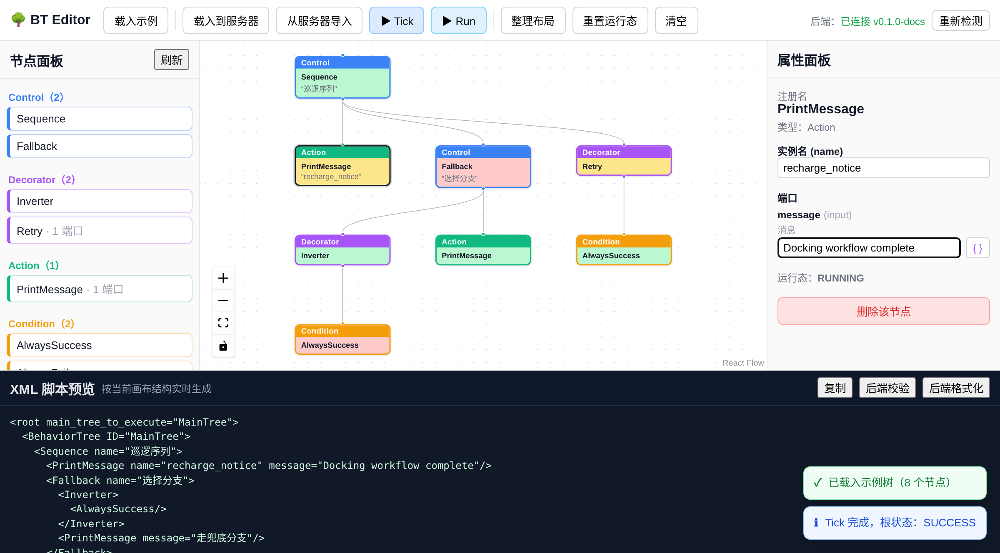

编辑器与 Playwright¶
验证拓扑¶
bt_editor 使用 React、TypeScript 和 React Flow。浏览器测试分成两条互补路径：
路径 |
后端 |
用途 |
|---|---|---|
默认 |
Playwright route mock |
稳定覆盖 UI 全流程、恢复/错误路径和桌面/窄屏几何，不依赖 C++ 进程。 |
opt-in |
真实 |
覆盖生产 Vite preview 代理、27 个真实 manifest（编辑器另加 2 个结构条目）、调度节点端口、严格 XML、load/validate/tick。 |
两条路径都在生产构建后的 Vite preview 上运行。开发服务器和 preview 共用
BT_BACKEND_URL 代理契约，默认指向 http://localhost:8080；live 项目使用
http://127.0.0.1:18080。
{kind=link}

默认 mocked E2E¶
bt_editor/e2e/editor.spec.ts 覆盖：
页面加载、健康状态和动态 manifest 面板。
通过文件选择器导入八节点 XML、发送
/api/tree/load、Tick 状态上色和 Run 摘要。后端 XML 校验、格式化和服务器 XML 导入。
节点拖拽、画布内移动、父子连线、层级布局和 DFS 前序状态映射。
PrioritySelector/TickRate的视觉优先级顺序、分级端口编辑和 XML 同步。节点级
+/-折叠、折叠全部/展开全部，并确认折叠不改变 XML。实例名/端口编辑后 XML 预览同步。
黑板参数面板的新增、类型/初始值填写、XML 绑定，以及空键名/重复键名拦截。
多树 XML 导入后直接 Run，断言
/api/tree/load包含 BlackboardEntry且不会发送 第二次/api/tree/blackboard注入请求。.bt.json的 XML/blackboard 一致导入和不一致拒绝错误路径。XML 黑板绑定：预览和下载的 XML 包含
TreeNodesModel/Blackboard/Entry，配置包同时包含schema、XML 和黑板数组；包含自定义 Yuyi 端口时还会保存editor_manifests，下载文件 内容与当前面板值一致。自定义 XML 节点可输入注册名/类别，并在属性面板添加
path_file、ID、service 名称等 manifest 未声明属性；XML 预览保留这些属性，但后端仍会要求运行时注册和providedPorts()。自定义 Yuyi 节点可在属性面板声明 typed 输入/输出端口；Playwright 会验证
LoadYuyiPath.path_file的固定值、path的黑板输出映射，以及刷新后端口契约仍保留。自定义 Control 节点可以连接多个子节点；导入未知 Yuyi 节点时，属性面板提供 Control / Decorator / Action / Condition 的结构提示选择。该选择只服务于画布连线，运行时类型仍由 插件 manifest 决定。
多
BehaviorTree定义可从服务器导入并在顶部标签间切换；SubTree/SubTreePlus结构节点可直接加入节点面板，新增/重命名子树后完整 XML 仍保留调用点、目标定义和黑板。ROS2 能力快照可为
editor_hint=ros_topic端口提供运行时 topic 候选；普通后端的available=false以及兼容旧后端的 404 都会回退到手填，并明确显示当前没有快照。编辑器通过固定本机 bridge 代理自动读取 ROS2 图；Playwright 断言不存在 URL 输入，并覆盖 手动刷新、node/topic/service/action/manifest 统计和 bridge 不可用降级。
黑板参数和 XML 侧初值摘要在刷新后保持；手机视口使用带字段标签的参数表单且不产生 页面级横向滚动。
/api/tree/tick返回 HTTP 500 时，通过role=alert呈现可访问错误信息。后端错误响应的
error字段会保留在提示中；Run 在后端尚无树时先自动载入当前画布， 再调用/api/tree/run，避免只得到无上下文的 404。后端离线时保留本地编辑，节点清单失败时仍显示内置结构节点和自定义 XML 入口；手工重连后 runtime manifest 会替换降级条目并恢复后端按钮。
Tick 上色后重置为 IDLE、删除连线节点、清空并回到空状态的完整生命周期。
1280×720、768×1024、390×844 下无横向溢出、画布不坍缩、工具栏不越界， React Flow 浮层不遮挡节点；触控视口可点击节点条目直接添加。
运行：
cd bt_editor
npm run test:e2e
真实后端 E2E¶
以下 Linux 命令在独立 Release 目录构建真实 server/plugin，然后由 Playwright 管理两个 短生命周期进程。调用方必须显式传入产物路径，避免误连陈旧或未加载插件的 server。
cmake -S . -B /tmp/btx-docs-live-build \
-DCMAKE_BUILD_TYPE=Release \
-DBT_BUILD_SERVER=ON -DBT_BUILD_NODES=ON \
-DBT_BUILD_TESTS=OFF -DBT_BUILD_EXAMPLES=OFF
cmake --build /tmp/btx-docs-live-build \
--target bt_server bt_nodes --parallel
cd bt_editor
BT_SERVER_BIN=/tmp/btx-docs-live-build/bin/bt_server \
BT_NODES_PLUGIN=/tmp/btx-docs-live-build/lib/libbt_nodes.so \
npm run test:e2e:live
live 用例会断言真实 manifest 恰好 27 个、AlwaysSuccess / AlwaysFailure 是
Condition、PrintMessage.message 默认 hello bt，然后执行示例 load、validate、
tick。它再清空浏览器画布，从 server 导回八节点树并执行 Run，证明生产 preview、编辑器
状态和真实 C++ 树形成闭环。最后直接请求严格校验接口，确认 messsage 这类未声明属性
返回 HTTP 400 和带节点上下文的错误。
截图资料¶
以下四张图片由固定 viewport、固定 mocked API 响应生成，目的不是冒充真实 server，
而是提供稳定、可重现的文档视觉基线。真实后端闭环由上一节的独立 live 用例证明。
1200 像素文档画布会隐藏 MiniMap/运行态浮层，避免辅助浮层遮挡可编辑节点；1280、768、
390 像素的几何回归由 responsive.spec.ts 单独证明。
{kind=link}

{kind=link}

{kind=link}

{kind=link}

重新生成并验证：
cd bt_editor
npm run screenshots
npm run screenshots 先运行生产构建，再写入四张 PNG，最后调用
screenshots:check。hash gate 会拒绝缺失、过小或内容重复的图片；默认 E2E 不会
改写文档截图。
稳定性与边界¶
发布前应让默认 Chromium 用例连续通过三次：
cd bt_editor
npm run build
for run in 1 2 3; do npx playwright test --project=chromium || exit 1; done
默认集合的数量以 Playwright 当次输出为准；它包含编辑器主流程和 5 个响应式视口（桌面、
平板和手机的可达性/触控路径）。CI 允许 retry 仅用于收集诊断，但 failOnFlakyTests 会让
retry-pass 仍然失败；每一轮使用独立输出目录，HTML 报告、trace、失败截图和生成的文档图
由 GitHub Actions 保留 14 天。preview 使用 --strictPort，4173 被占用时立即失败，
不会静默切到其他端口并误测另一进程。
Vitest 负责 XML round-trip、DFS id、连线规则、导入/整理布局和端口控件推断； 统一发布 gate 中的 server API 集成阶段负责更宽的 HTTP 错误契约；Playwright 负责真实 浏览器交互。三层验证互补，不能用其中一项代替另外两项。